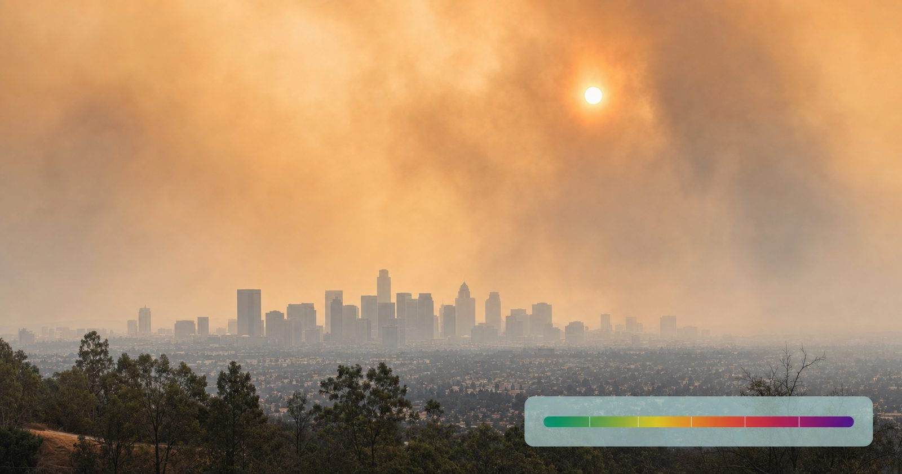

Key Takeaways
- Wildfire smoke is not the same as urban smog. Studies suggest wildfire PM2.5 is more harmful than the same amount of PM2.5 from other sources: in one Southern California study, respiratory hospitalizations rose 1.3 to up to 10 percent per 10 micrograms per cubic meter of wildfire PM2.5, versus 0.67 to 1.3 percent for other PM2.5. A 2024 review attributes this to more oxidative and pro-inflammatory components in wildfire smoke.[8][20]
- The AQI categories already flag sensitive groups first. At 101 to 150 (Orange), members of sensitive groups may experience health effects while the general public is less likely to be affected; at 151 (Red), some members of the general public may experience health effects.[1] EPA's activity guide advises everyone else to avoid long or intense outdoor activities at 201 to 300 (Purple) and everyone to avoid all physical activity outdoors at 301 and higher (Maroon).[11] EPA updated the PM2.5 breakpoints in February 2024, so older wildfire guidance may cite outdated numbers.[2]
- If you must go outdoors in smoke, CDC advises a NIOSH Approved N95 respirator.[7] In lab chamber studies, N95s removed more than 94 percent of combustion particles, while a single-layer cotton bandana filtered 8.9 percent.[9] Population modeling estimates N95 use could reduce smoke-attributable respiratory hospitalizations by 22 to 39 percent.[10]
- In EPA testing, a DIY Corsi-Rosenthal box (a box fan with four 1-inch MERV 13 filters and a cardboard shroud) had a Clean Air Delivery Rate of about 401 cubic feet per minute, and the EPA researchers concluded that shrouded, multi-filter designs make DIY units more effective than higher-priced commercial units. In a small room-sized test chamber, it cut PM2.5 from 80 to below 10 micrograms per cubic meter in about 6 minutes.[4][5]
- Wildfire smoke is associated with cardiovascular events, not just respiratory symptoms. A study of California's 2015 wildfire season found all-cause cardiovascular emergency-department visits were elevated across all lag days studied, with the greatest increase on dense smoke days among adults 65 and older (RR 1.15, 95 percent CI 1.09 to 1.22).[15]
- Higher-risk groups include people with heart or lung disease, diabetes, or chronic kidney disease, pregnant people, children, older adults, and outdoor workers.[3][11] If you are in one of these groups, follow the advice for sensitive groups, which starts at Orange (AQI 101), one category before the general public is expected to be affected.[1][7]

Wildfire smoke is not only a problem for people who live near fires. Smoke from wildfires can travel hundreds of miles and affect large population centers downwind, and smoke concentrations can remain elevated for days to weeks.[5] Recent summers have brought smoke alerts to regions far from where the fires were burning.
What we know about the health effects has also grown. Toxicological studies suggest wildfire particulate matter may be more toxic than equal doses of ambient PM2.5, and epidemiologic studies have linked wildfire smoke to respiratory hospitalizations and to cardiovascular and cerebrovascular emergency visits.[8][15] A 2024 review also notes data suggesting that prenatal exposure to wildfire PM2.5 is associated with low birth weight and preterm birth.[20]
This guide is a physician's attempt to give you a clear, evidence-based playbook: what the AQI number actually means, which mask is worth wearing and which is not, how a low-cost DIY air cleaner performs, what symptoms to watch, and when to skip the telehealth visit and go to the ER. Material claims are cited to their sources.
What Wildfire Smoke Actually Is (and Why It Is Worse Than Smog)
Wildfire smoke is a mix of gases and fine particles from burning trees and plants, buildings, and other material.[3] The pollutants it generates include fine and coarse particulate matter, carbon monoxide, methane, nitrous oxides, volatile organic compounds (VOCs), and ozone formed in the air from nitrogen oxides and VOCs.[20] The main health driver is fine particulate matter, known as PM2.5: particles generally 2.5 micrometers and smaller.[29] Fine and ultrafine particles can penetrate deep into the lungs and can also be absorbed into the bloodstream.[20]
What makes wildfire PM2.5 different from urban PM2.5 is composition, not size. A 2024 review describes wildfire smoke as containing more oxidative components, such as polycyclic aromatic hydrocarbons and quinones, along with pro-inflammatory elements, which it says make it more toxic than non-smoke urban particles.[20] That difference shows up in outcome studies. In one 749-city global time-series study, each 10 microgram per cubic meter increase in wildfire PM2.5 (3-day moving average) was associated with a 1.9 percent increase in all-cause mortality, a 1.7 percent increase in cardiovascular mortality, and a 1.9 percent increase in respiratory mortality; about 0.62 percent of all-cause deaths each year were attributable to acute wildfire PM2.5 exposure.[19] A 2021 Nature Communications study from Southern California found wildfire-specific PM2.5 was associated with a 1.3 to up to 10 percent increase in respiratory hospitalizations per 10 microgram per cubic meter increase, versus 0.67 to 1.3 percent for non-wildfire PM2.5.[8]
The size of the difference varies by outcome and study, and these are observational studies, but the direction is consistent: a 2025 analysis of more than 6 million emergency visits in five Western states also found stronger effects for wildfire smoke PM2.5 than nonsmoke PM2.5, particularly for asthma.[21] You should not assume that a familiar bad-air day from traffic pollution predicts how your body will react to a wildfire-smoke episode with the same AQI reading.
The size differences also explain how smoke moves through the body. Coarse particles mostly deposit in the nose, throat, and larger airways, while fine particles primarily deposit in the respiratory bronchioles and alveoli, where gas exchange happens.[30] EPA notes that some particles may even get into the bloodstream.[29] A review of ultrafine particles describes them as entering the body through the lungs and translocating to essentially all organs,[31] although EPA notes that in animal studies only a small fraction (less than 1 percent) of insoluble ultrafine particles moved into the blood, and human studies with radiolabeled particles have not identified this translocation.[30]
The AQI Number That Matters (And What Each Threshold Means)
The Air Quality Index (AQI), maintained by EPA at AirNow.gov, converts pollutant concentrations into a 0 to 500+ scale with six health-based categories. In February 2024, EPA updated the PM2.5 breakpoints at the upper end of the Unhealthy, Very Unhealthy, and Hazardous categories and lowered the Good/Moderate breakpoint to 9.0 micrograms per cubic meter. Any guidance quoting the old numbers is out of date.[2]
0-50
51-100
101-150
151-200
201-300
301+
| Category | AQI | PM2.5 (24-hr, µg/m³) | What sensitive groups should do | What everyone else should do |
|---|---|---|---|---|
| Good | 0-50 | 0.0-9.0 | Normal activity | Normal activity |
| Moderate | 51-100 | 9.1-35.4 | Unusually sensitive people: consider shorter, less intense outdoor activities | Normal activity |
| Unhealthy for Sensitive Groups | 101-150 | 35.5-55.4 | Make outdoor activities shorter and less intense; take more breaks | Less likely to be affected |
| Unhealthy | 151-200 | 55.5-125.4 | Avoid long or intense outdoor activities; consider rescheduling or moving indoors | Reduce long or intense activities; take more breaks |
| Very Unhealthy | 201-300 | 125.5-225.4 | Avoid all physical activity outdoors | Avoid long or intense activities; consider moving indoors |
| Hazardous | 301+ | 225.5+ | Remain indoors and keep activity levels low | Avoid all physical activity outdoors |
Category descriptions and PM2.5 breakpoints are from EPA's AirNow AQI basics page and the 2024 PM NAAQS fact sheet; activity advice is from EPA's Air Quality Guide for Particle Pollution, which defines sensitive groups as people with heart or lung disease, older adults, children and teenagers, minority populations, and outdoor workers.[1][2][11]
Check fire.airnow.gov, AirNow's fire and smoke map, at least once in the morning during any smoke event, and again before planning time outdoors, because smoke conditions can change during the day.
Cross-Border Realities: AQI (US) vs. AQHI (Canada)
Canada uses a different system called the Air Quality Health Index (AQHI), a scale ranging from 1 to 10+ that is normally based on the combined health risks of ozone, particulate matter, and nitrogen dioxide.[16] AQI and AQHI are not on the same numeric scale. An AQHI of 7 is not equivalent to an AQI of 7.
| AQHI | Risk Level | At-risk groups | General population |
|---|---|---|---|
| 1-3 | Low | Usual outdoor activities | Usual outdoor activities |
| 4-6 | Moderate | Consider reducing or rescheduling strenuous outdoor activities if you have symptoms like coughing or throat irritation | Continue usual outdoor activities unless you have symptoms like coughing and throat irritation |
| 7-10 | High | Reduce or reschedule strenuous outdoor activities | Consider reducing or rescheduling strenuous outdoor activities if you have symptoms |
| 10+ | Very High | Avoid strenuous activities outdoors | Reduce or reschedule strenuous outdoor activities, especially if you have symptoms |
Environment and Climate Change Canada also issues air quality alerts, colour-coded yellow, orange, or red based on possible risks. During wildfire smoke events, it calculates the AQHI hourly using PM2.5 only, so the number responds faster to changing smoke conditions.[16]
Practical rule for the border regions: if you live near the Canadian border, you may see US and Canadian numbers side by side on social media and news reports during a smoke event. Use AirNow.gov (or fire.airnow.gov) for US-scale AQI in the United States, and the Government of Canada AQHI pages at canada.ca for AQHI in Canada. Both scales trigger similar action thresholds in spirit, they just get there with different math.
Symptoms Most People Ignore, and the Ones That Mean Go Now
Many wildfire smoke symptoms are mild: coughing, scratchy throat, runny nose, stinging eyes, irritated sinuses, headaches, tiredness, and a fast heartbeat. CDC also lists trouble breathing, wheezing, asthma attacks, and chest pain, which are more serious.[3] Three patterns help sort what to do.
Green-zone symptoms (usually self-limited)
- Cough, sore or scratchy throat, runny nose, sinus irritation
- Stinging or watery eyes
- Headache, fatigue, faster heartbeat with mild exertion
- Mild wheezing that responds fully to a rescue inhaler and does not return within a few hours
These usually ease once air quality improves. If they persist for several days after air quality clears, contact a clinician.
Yellow-zone symptoms (contact a clinician, telehealth appropriate)
- Cough that will not go away or is producing colored sputum
- Wheezing that needs your rescue inhaler more often than your asthma action plan allows
- New shortness of breath, or shortness of breath that limits normal activity
- In people with heart disease: palpitations, unusual fatigue, or shortness of breath (chest pain is a red-zone symptom)[7][11]
- Sinus symptoms that keep getting worse, or that return after starting to improve, which can point toward a bacterial sinus infection
These deserve a physician conversation the same day. A same-day telehealth visit is often the right first step, particularly for a treatment step-up under your asthma or COPD action plan, or to evaluate a possible bacterial sinus infection. Whether that visit happens through TeleDirectMD, another telehealth service, or an in-person clinic, the goal is to catch a modest deterioration before it turns into a red-zone event.
Red-zone symptoms (call 911 or go to the ER now)
- Chest pain, chest pressure, or pain radiating to arm or jaw
- Severe trouble breathing (unable to speak in full sentences)
- Asthma attack not responding to your rescue inhaler
- Blue lips or fingertips
- Facial or arm weakness, sudden confusion, slurred speech (possible stroke)
- Fainting or near-fainting
CDC advises calling 9-1-1 or going right away to an emergency department for medical emergencies like severe trouble breathing, chest pain, or a possible heart attack or stroke.[7] The other items are standard emergency warning signs.
Who Is Highest Risk (and Why the AQI Flags Them First)
Not everyone reacts to smoke the same way. CDC, the American Lung Association, and Ontario's Ministry of Health publish overlapping lists of higher-risk groups:[3][17][18]
- People with asthma or COPD. Across published studies, each 10 microgram per cubic meter increase in wildfire PM2.5 has been associated with roughly a 10 percent rise in short-term asthma risk, including emergency-department visits and hospitalizations.[20] A 2025 analysis of more than 6 million ED visits across five Western US states found wildfire PM2.5 had a stronger association with asthma visits than non-smoke PM2.5.[21]
- People with heart disease. A study of California's 2015 wildfire season found all-cause cardiovascular ED visits were elevated on smoky days, with the greatest increase on dense smoke days among adults 65 and older (RR 1.15), and elevated risks for myocardial infarction, ischemic heart disease, heart failure, dysrhythmia, pulmonary embolism, ischemic stroke, and TIA.[15] A 2024 review cautions that, overall, the data linking wildfire smoke and cardiovascular outcomes remain limited and inconsistent.[20]
- Pregnant people. CDC and ALA both list pregnancy as a higher-risk state.[3][17] A 2024 review notes data suggesting prenatal wildfire PM2.5 exposure is associated with low birth weight and preterm birth.[20] Following the sensitive-group advice for each AQI category is a reasonable cautious default; coordinate with your obstetric provider if you have questions.
- Children, especially young children. Children are more susceptible to smoke because of greater minute ventilation per unit body weight, smaller airways, more time outdoors, and developing lungs, and several studies find children aged 0 to 5 most affected by asthma hospitalization after smoke.[20] The American Academy of Pediatrics notes that children breathe more air than adults on a pound-for-pound basis.[23]
- Adults 65 and older. Underlying heart and lung disease is more common, and the California study found the largest cardiovascular ED visit increases in this age band.[15]
- Outdoor workers. EPA counts outdoor workers among sensitive groups, and Ontario's guidance lists people who work outdoors as higher risk.[11][18] Construction, landscaping, delivery, agriculture, and postal workers accumulate hours of exposure. If you must be outdoors in smoke, CDC advises a NIOSH Approved N95 respirator.[7]
- People with chronic kidney disease or diabetes. Both are recognized by CDC as chronic conditions that raise wildfire-smoke risk.[3]
The practical rule: if you fall into any of these groups, follow the advice for sensitive groups. On the AQI it starts at Orange (101 to 150), where members of sensitive groups may experience health effects while the general public is less likely to be affected.[1] CDC likewise advises people with chronic conditions to follow instructions about exercise and going outside for "sensitive individuals."[7]
Indoor Protection: HEPA, Corsi-Rosenthal Box, and MERV-13
Staying inside as much as possible is core advice during a smoke event.[7] But "inside" is not automatic protection. EPA estimates that with doors and windows closed and no portable air cleaner, indoor PM2.5 is typically around 55 to 60 percent of outdoor levels during wildfire smoke events, varying from as low as 30 percent to as much as 100 percent across homes; with doors and windows open, indoor and outdoor levels are similar.[13]
Set Up a Clean Room
Designate one room as the "clean room"; EPA notes a bedroom with an attached bathroom is a good choice because you can close it off from the rest of the house. Close its windows and doors. If you have central air, turn off the fresh-air option, close the intake, or set the system to recirculate; install a MERV 13 or higher filter if your system can take one, and set the fan to "On" instead of "Auto" to get the most out of the filter. Run a portable air cleaner that is the right size for the room, continuously on the highest setting if you can. EPA recommends DIY air cleaners only when products of known performance are not available or affordable.[12] With the system fan running continuously, a high-efficiency HVAC filter may decrease indoor PM2.5 by about 50 percent.[13]
The Low-Cost DIY Option: Box-Fan Air Cleaners
The Corsi-Rosenthal box, popularized during COVID and now tested with simulated wildfire smoke, uses four (sometimes five) furnace filters attached to a single box fan.[5] EPA's research lab has measured DIY designs under controlled conditions:[4]
| Configuration | Measured CADR (CFM) | Notes |
|---|---|---|
| Box fan + 1 MERV-13 filter (1-inch) | 111 ± 1 | Simplest option; comparable to a small commercial air cleaner for small rooms |
| Box fan + 1 filter + cardboard shroud | 156 ± 4 | Shroud prevents air recirculation in the fan, increasing flow |
| Box fan + 4-inch MERV-13 filter + shroud | 248 ± 15 | Thicker filter, more surface area |
| 2 filters + shroud | 263 ± 22 | Comparable to commonly marketed commercial air cleaners (about 300 CFM) |
| Corsi-Rosenthal box (4 filters + shroud) | 401 ± 31 | Nearly four times the single-filter design |
The table comes from the EPA researchers' peer-reviewed 2022 Indoor Air study, which measured a baseline single-filter CADR of 111.2 ± 1.3 CFM, found the Corsi-Rosenthal box increased CADR by 261 percent over baseline, and showed it cut PM2.5 in a small room-sized chamber from 80 to below 10 micrograms per cubic meter in about 6 minutes. The authors concluded that designs with a cardboard shroud and multiple filters are more cost-effective and more effective than higher-priced commercial units.[5] EPA also summarizes one study in which a DIY air cleaner reduced indoor PM2.5 by about 56 percent after 90 minutes in a larger room and about 99 percent within 60 minutes in a smaller room.[13]
- Use only newer, certified box fans with added safety features (2012 models or newer), such as fused plugs and thermal cutoffs.[4][22]
- EPA advises that older fans should not be used unattended or while sleeping, and that children should not be left unattended when the fan is in use.[4]
- Do not use an extension cord, and do not use a damaged or malfunctioning fan.[4]
- Change the filter when it is dark brown or grey or smells like smoke. EPA found DIY air cleaners "almost completely ineffective with dirty filters."[4]
Central HVAC: The MERV-13 Floor
If your central HVAC uses a MERV 8 filter, consider a MERV 13 or higher filter before smoke season if your system can take one. EPA's technical guidance for building operators notes that MERV 8 filters are commonly used and need to be upgraded, and that MERV 13 filters can remove at least 50 percent of the smallest particles (0.3 to 1.0 microns, the size of most smoke particles) with each pass.[22] Set the fan to "On" rather than "Auto" during a smoke episode so the filter runs as often as possible.[12]
When to Leave Your House
The American Lung Association advises seeking shelter elsewhere if you do not have an air conditioner and it is too warm to stay inside with the windows closed.[24] CDC advises people with chronic conditions to think about evacuating if they have trouble breathing or other symptoms that do not get better.[7] Options include a library, community center, or a friend's home with air conditioning and better filtration.
Outdoor Protection: Which Masks Actually Work
This is the section where common intuition and evidence diverge the most. In lab chamber studies, N95 respirators removed more than 94 percent of combustion particles (moderate-certainty evidence). A single-layer cotton bandana, tested against combustion particles, filtered 8.9 percent, plus or minus 1.7 percent.[9] CDC advises wearing a NIOSH Approved N95 respirator if you must go outdoors during a wildfire smoke event.[7]
| Mask type | Lab filtration of combustion particles | Exposure reduction factor (modeled) |
|---|---|---|
| N95 (NIOSH Approved, properly fitted) | >94% (moderate certainty) | >14x with a 5% leak rate |
| R95 / P95 | May be effective | Not modeled |
| Surgical mask | >81% of larger pine-needle smoke particles (low certainty) | 1.7x |
| Synthetic-fiber mask | Not reported | 2.2-4.4x, depending on particle size |
| Natural-fiber (cotton) mask or bandana | 8.9% (single-layer cotton bandana) | 1.9x |
Sources: NCCEH rapid review for lab filtration, and Kodros et al. 2021 modeling for exposure reduction.[9][10] CDC notes that dust masks, surgical masks, bandanas, and breathing through a wet cloth will not protect against smoke.[7] Population modeling by Kodros and colleagues estimated N95 use could reduce smoke-attributable respiratory hospitalizations by 22 to 39 percent, while natural-fiber masks reduced them by only 2 to 11 percent.[10]
Why Fit Beats Filter Material
Modeling shows that the filtration efficiency, the bypass rate (air leaking around the edges), and the compliance rate (how consistently masks are worn) are the key factors governing how much exposure a mask prevents.[10] Air that leaks around the edges is not filtered at all. This has three practical implications:
- Beards defeat N95s. Any facial hair between the mask and the skin breaks the seal. Anyone with a beard should either shave the seal area for the duration of the smoke event or accept meaningfully reduced protection.
- Children need masks that fit. An EPA factsheet says children 2 and up may get some protection from N95 or surgical masks, but only if they are fitted tightly to the face, and that the mask should come off if the child is uncomfortable or says it is hard to breathe.[25] CDC cautions that surgical masks will not protect a child from smoke, so a small, well-fitted N95 is the better choice where one fits.[7]
- Check the mask with a mirror. If you can see air ripping the mask edge when you breathe out sharply, it is not sealed. Adjust the nose bridge, pull the straps tighter, or try a different size.
Masks Are Not a Substitute for Staying Inside
The right sequence is: monitor AQI, stay indoors when possible, use a mask only when going outdoors during Unhealthy or worse conditions is unavoidable. N95s work, but they are uncomfortable to wear for hours, they get soggy in humid weather, and they do not eliminate exposure. If you can move the errand indoors or postpone it a day, do that first.
Medications During a Smoke Event
The CDC guidance for people with chronic conditions does not give smoke-specific medication doses. It advises following your healthcare provider's advice and your asthma action plan if you have one, and storing a 7 to 10-day supply of prescription medicines to take with you if you evacuate.[7] A few disease-specific points are worth understanding.
Asthma: Rescue and Step-Up
Anyone with asthma should have a current written asthma action plan and enough rescue inhaler to last through the season. EPA's activity guide advises people with asthma to follow their asthma action plan and keep quick-relief medicine handy.[11] One common assumption needs correcting: for adolescents and adults, the 2020 national asthma guideline update states that a short-term increase in the inhaled corticosteroid dose alone for worsening symptoms is not recommended.[14] Any step-up plan should be set with your clinician in advance, not improvised during an event. Severe trouble breathing, inability to speak in full sentences, or no response to your rescue inhaler are red-zone signals requiring emergency care.[7]
COPD
Continue your usual maintenance inhalers as prescribed and follow your COPD action plan if you have one. Keep a low threshold to contact your clinician: worsening shortness of breath, a change in sputum, or a home oxygen reading below your usual baseline should prompt a same-day clinical assessment.
Heart Disease: Do Not Stop Your Medications
CDC guidance is direct: talk to your healthcare provider before smoke season, plan how you will protect yourself, keep a supply of your prescription medicines, and think about evacuating if you have trouble breathing or other symptoms that do not get better.[7] CDC gives no wildfire-specific cardiac medication protocol. Do not stop or adjust beta-blockers, statins, antiplatelet agents, or blood pressure medicines without medical guidance. If you take nitroglycerin PRN and are using it more than usual during a smoke event, that is itself a signal to contact your cardiologist or primary care physician.
A 2023 opinion article in Frontiers in Cardiovascular Medicine argued that statin use beneficially modifies PM2.5 effects on inflammation and may improve endothelial function, while acknowledging that statin prevention for smoke exposure is "not considered in current guidances."[6] This is a research hypothesis, not a reason to start or change statin therapy. Do not initiate statins because of smoke exposure without a full cardiovascular-risk conversation with your clinician.
Kids, Schools, and Pregnancy
Children and pregnant people warrant more conservative thresholds than the general population. The guidance below draws from the American Academy of Pediatrics, an EPA factsheet on children's health and wildfires, and CDC.[23][25]
School and Athletics During Smoke
We could not find an AAP AQI cutoff for stopping school athletics, and EPA's 2022 children's health and wildfire smoke workshop recommendations set no single AQI number for school activities. They describe recess as about 15 minutes, PE as up to an hour, and athletics practices and events as 2 to 4 hours, and recommend these steps when outdoor conditions are poor:[26]
- Shorten the amount of time that children are active outdoors.[26]
- Substitute light or moderate activities for more vigorous ones.[26]
- Hold physical activities indoors in appropriate spaces with acceptable indoor air quality.[26]
- During prolonged or repeated smoke events, make indoor space available for at-risk children even when the AQI is in the Moderate category.[26]
Check your school district's or state's own smoke policy, which may set specific AQI cutoffs.
Children and Masks
Per an EPA factsheet: children 2 and up may get some protection from N95 or surgical masks, but only if they are fitted tightly to the face; use masks only for short periods when your child must be outdoors, and take the mask off if your child is uncomfortable or says it is hard to breathe.[25] CDC adds that dust masks, surgical masks, bandanas, and breathing through a wet cloth will not protect your child from smoke.[7] Humidifiers or breathing through a wet washcloth do not prevent breathing in smoke.[25]
Pregnancy
CDC, ALA, and Ontario's Ministry of Health all list pregnant people as a higher-risk group; the pages reviewed for this guide do not give a separate pregnancy-specific action protocol.[3][17][18] The reasonable defaults: follow the sensitive-group advice for each AQI category, prioritize indoor time, use a fitted N95 for necessary outdoor errands, and contact your obstetric provider for any new shortness of breath, chest discomfort, decreased fetal movement, or contractions during or after a smoke event.
Cognitive Effects: An Emerging (and Contested) Signal
Whether wildfire smoke affects long-term brain health, including dementia risk, is not settled. This guide does not cite a dementia risk estimate: the most widely reported one, from a 2025 study, did not hold up after its authors corrected their analysis, and the journal retracted and replaced the paper.
Short-term cognitive effects are better documented. In a 2022 Environmental Health Perspectives study of more than 10,000 U.S. adults using a brain-training game, a 10 microgram per cubic meter increase in PM2.5 in the 3 hours before play was associated with a 21-point decrease in an attention score. Medium and heavy smoke density were also associated with lower scores; heavy smoke the day before play was associated with a 117-point decrease.[27] Whether these transient effects translate into long-term cognitive risk is an active research question. For now, the honest framing is: this is an emerging signal, not settled science.
Recovery After a Smoke Event
Once air quality improves, the acute symptoms most people experience (cough, sore throat, eye irritation, headache) usually ease. Several things are worth knowing about the tail.
- The risk window extends beyond the event. Smoke can stay in the air for days after wildfires have ended, so keep checking local air quality before resuming outdoor exercise.[7]
- Children's asthma peak may be delayed. A 2024 CHEST Pulmonary analysis of asthma hospitalizations in Utah found that during wildfire season, adults' risk was highest in the first 3 days after PM2.5 increases, but children's highest risk was delayed by 3 to 4 weeks.[28] Do not assume a child who seemed fine during the smoke event is out of the woods.
- Cardiovascular risk can outlast the smoke day. In the California study, all-cause cardiovascular ED visits were elevated across all lag days studied, from the smoke day through four days after.[15] If you develop chest pain after a heavy smoke event, treat it as an emergency; new palpitations or shortness of breath deserve a call to your clinician rather than being dismissed.[7]
- Cleanup dust is not safe. If your area was directly affected by fire, wear a fitted N95 during cleanup and thoroughly wet dusty and sooty areas first. People with lung or heart disease should avoid cleanup activities where dust or soot is present.[24]
- Persistent symptoms warrant evaluation. A cough, shortness of breath, or chest discomfort that persists more than several days after air quality clears is not "just recovery." Contact a clinician.
When Telehealth Is Enough, and When It Is Not
CDC does not publish a formal telehealth-vs-in-person decision tree specific to wildfire smoke, but its two-tier "contact your provider" versus "call 911 / go to the ED" framework maps cleanly onto how TeleDirectMD and other telehealth services triage.[7]
Telehealth-appropriate
- Cough, sore throat, sinus irritation, headache that will not resolve after several days
- Asthma symptoms responding partially to a rescue inhaler and needing a step-up
- Suspected bacterial sinusitis after a viral illness prolonged by smoke exposure
- Rescue-inhaler prescriptions or refills
- Treatment step-up under an existing asthma or COPD action plan
- New or worsening rash or conjunctivitis from smoke exposure
- Palpitations or unusual fatigue in someone with known, stable heart disease who is not having chest pain and is hemodynamically stable
Skip telehealth, go in-person or to the ER
- Chest pain, chest pressure, severe shortness of breath
- Asthma attack not responding to your rescue inhaler
- Blue lips or fingertips, altered mental status
- Fainting or near-fainting
- Any stroke-like symptoms (facial or arm weakness, sudden confusion, slurred speech)
- Suspected pneumonia or other systemic infection with high fever, rigors, or hemodynamic instability
- Pregnancy: decreased fetal movement, contractions, vaginal bleeding, or severe headache
The general rule: a telehealth visit is the right first step for symptoms that need a clinical opinion and a possible prescription. In-person or emergency care is right whenever airway, breathing, circulation, or neurologic function is in question.
Wildfire Smoke Season Checklist
- Install a MERV-13 filter in your central HVAC and switch to recirculate mode when smoke is present
- Build or buy at least one HEPA-equivalent air cleaner and stage it in a designated "clean room"
- Have a supply of NIOSH Approved N95 respirators that fit each member of your household (children 2 and older need a small, well-fitted size)
- Refill rescue inhalers, controller inhalers, and any cardiac medications before running low
- Have a current written asthma action plan or COPD plan reviewed with your clinician
- Bookmark fire.airnow.gov and, if you live near the Canadian border, the Government of Canada AQHI pages
- Know where you could go (a library, community center, or friend's home with air conditioning) if your home becomes too warm to keep closed up
Next Steps
Wildfire smoke is a household-level problem that also happens to be a medical problem. The household-level side (filters, masks, planning) is largely a matter of preparation. The medical side is where clinical judgment matters: knowing when a persistent cough means a bacterial sinus infection, when worsening wheezing needs a treatment step-up, when new palpitations in a heart-disease patient warrant urgent evaluation.
If you develop symptoms during or after a smoke event that fall into the yellow-zone described above, a same-day clinical evaluation is the right first step. That evaluation can happen through a telehealth visit or an in-person primary care or urgent care visit; both are legitimate options depending on the symptom pattern and your preference. Reserve the emergency department for the red-zone symptoms.
The goal of this guide is not to replace that clinical conversation. It is to give you a framework for knowing when to have it, and what filtration and mask choices matter in the meantime.
References
- U.S. Environmental Protection Agency. Air Quality Index (AQI) Basics. AirNow.gov. https://www.airnow.gov/aqi/aqi-basics
- U.S. Environmental Protection Agency. Revised PM2.5 NAAQS and AQI Fact Sheet. February 2024. https://www.epa.gov/system/files/documents/2024-02/pm-naaqs-air-quality-index-fact-sheet.pdf
- Centers for Disease Control and Prevention. How Wildfire Smoke Affects Your Body. https://www.cdc.gov/wildfires/risk-factors/index.html
- U.S. Environmental Protection Agency. Research on DIY Air Cleaners to Reduce Wildfire Smoke Indoors. https://www.epa.gov/air-research/research-diy-air-cleaners-reduce-wildfire-smoke-indoors
- Holder AL, Halliday HS, Virtaranta L. Impact of do-it-yourself air cleaner design on the reduction of simulated wildfire smoke in a controlled chamber environment. Indoor Air. 2022;32(11):e13163. https://pmc.ncbi.nlm.nih.gov/articles/PMC9828579/
- Vuorio A, Budowle B, Raal F, Kovanen PT. Wildfire smoke exposure and cardiovascular disease-should statins be recommended to prevent cardiovascular events? Frontiers in Cardiovascular Medicine. 2023;10:1259162. https://pmc.ncbi.nlm.nih.gov/articles/PMC10537918/
- Centers for Disease Control and Prevention. Wildfire Smoke and People with Chronic Conditions. https://www.cdc.gov/wildfires/risk-factors/wildfire-smoke-and-people-with-chronic-conditions.html
- Aguilera R, Corringham T, Gershunov A, Benmarhnia T. Wildfire smoke impacts respiratory health more than fine particles from other sources: observational evidence from Southern California. Nature Communications. 2021;12(1):1493. https://pmc.ncbi.nlm.nih.gov/articles/PMC7935892/
- National Collaborating Centre for Environmental Health (NCCEH) and National Collaborating Centre for Methods and Tools. Rapid Review: Evaluating the effectiveness of masks and respirators against wildfire smoke. Evidence search to April 2025. https://ncceh.ca/resources/evidence-reviews/rapid-review-evaluating-effectiveness-masks-and-respirators-against
- Kodros JK, O'Dell K, Samet JM, et al. Quantifying the Health Benefits of Face Masks and Respirators to Mitigate Exposure to Severe Air Pollution. GeoHealth. 2021;5(9):e2021GH000482. https://pmc.ncbi.nlm.nih.gov/articles/PMC8438762/
- U.S. Environmental Protection Agency. Air Quality Guide for Particle Pollution. EPA-452/F-23-002. February 2023. https://www.airnow.gov/sites/default/files/2023-03/air-quality-guide-for-particle-pollution_0.pdf
- U.S. Environmental Protection Agency. Create a Clean Room to Protect Indoor Air Quality During a Wildfire. Last updated August 18, 2026. https://www.epa.gov/emergencies-iaq/create-clean-room-protect-indoor-air-quality-during-wildfire
- U.S. Environmental Protection Agency. Wildfire Smoke Course: Strategies to Reduce Exposure Indoors. Last updated September 21, 2026. https://www.epa.gov/wildfire-smoke-course/strategies-reduce-exposure-indoors
- Cloutier MM, Dixon AE, Krishnan JA, et al. Managing Asthma in Adolescents and Adults: 2020 Asthma Guideline Update From the National Asthma Education and Prevention Program. JAMA. 2020;324(22):2301-2317. https://pubmed.ncbi.nlm.nih.gov/33270095/
- Wettstein ZS, Hoshiko S, Fahimi J, et al. Cardiovascular and Cerebrovascular Emergency Department Visits Associated With Wildfire Smoke Exposure in California in 2015. J Am Heart Assoc. 2018;7(8):e007492. https://pmc.ncbi.nlm.nih.gov/articles/PMC6015400/
- Environment and Climate Change Canada. About the Air Quality Health Index. Last modified October 14, 2026. https://www.canada.ca/en/environment-climate-change/services/air-quality-health-index/about.html
- American Lung Association. Air Quality and Health Impacts of Wildfire and Prescribed Fire. https://www.lung.org/policy-advocacy/healthy-air-campaign/prescribed-fire
- Ontario Ministry of Health. Wildfire Smoke and Air Quality Health Reference Document. Updated February 4, 2026. https://www.ontario.ca/page/wildfire-smoke-and-air-quality-health-reference-document
- Chen G, Guo Y, Yue X, et al. Mortality risk attributable to wildfire-related PM2.5 pollution: a global time series study in 749 locations. Lancet Planet Health. 2021;5(9):e579-e587. https://pubmed.ncbi.nlm.nih.gov/34508679/
- Wilgus ML, Merchant M. Clearing the Air: Understanding the Impact of Wildfire Smoke on Asthma and COPD. Healthcare (Basel). 2024;12(3):307. https://pmc.ncbi.nlm.nih.gov/articles/PMC10855577/
- Wang W, Li L, Zhu Q, et al. Differential Effects of Wildfire Smoke Fine Particulate Matter Exposure on Respiratory Disease Emergency Department Visits in the Western United States. Am J Respir Crit Care Med. 2025;211(11):2086-2095. https://pubmed.ncbi.nlm.nih.gov/40929521/
- U.S. Environmental Protection Agency. Best Practices Guide for Improving Indoor Air Quality in Commercial/Public Buildings During Wildland Fire Smoke Events. EPA/600/R-25/115. May 2025. https://nepis.epa.gov/Exe/ZyPURL.cgi?Dockey=P101HCVK.TXT
- American Academy of Pediatrics. Wildfires. Disaster Management Resources by Topic. Last updated October 22, 2024. https://www.aap.org/en/patient-care/disasters-and-children/disaster-management-resources-by-topic/wildfires/
- American Lung Association. Protect Your Health During Wildfires. https://www.lung.org/getmedia/695663e2-bdb8-4a61-9322-02657f530b99/protect-your-health-during-wildfires-5-29-2020-(1).pdf
- U.S. Environmental Protection Agency. Wildfire Smoke Factsheet: Children's Health and Wildfires: A Resource for Families. EPA-452/F-24-001. January 2024. https://nepis.epa.gov/Exe/ZyPURL.cgi?Dockey=P1019OX4.TXT
- U.S. Environmental Protection Agency, Office of Children's Health Protection. Children's Health and Wildfire Smoke Exposure Workshop: Workshop Recommendations. January 24, 2022. https://www.airnow.gov/sites/default/files/2022-01/childrens-health-wildfire-smoke-workshop-recommendations.pdf
- Cleland SE, Wyatt LH, Wei L, et al. Short-Term Exposure to Wildfire Smoke and PM2.5 and Cognitive Performance in a Brain-Training Game: A Longitudinal Study of U.S. Adults. Environ Health Perspect. 2022;130(6):67005. https://pmc.ncbi.nlm.nih.gov/articles/PMC9196888/
- Horne BD, Johnson MM, Blagev DP, et al. Association of Short-Term Increases in Ambient Fine Particulate Matter With Hospitalization for Asthma or COPD During Wildfire Season and Other Time Periods. CHEST Pulm. 2024;2(2):100053. https://pubmed.ncbi.nlm.nih.gov/38993972/
- U.S. Environmental Protection Agency. Particulate Matter (PM) Basics. https://www.epa.gov/pm-pollution/particulate-matter-pm-basics
- U.S. Environmental Protection Agency. Particle Pollution Exposure: deposition mechanisms in the airways. https://www.epa.gov/pmcourse/particle-pollution-exposure
- Schraufnagel DE. The health effects of ultrafine particles. Exp Mol Med. 2020;52(3):311-317. https://pmc.ncbi.nlm.nih.gov/articles/PMC7156741/